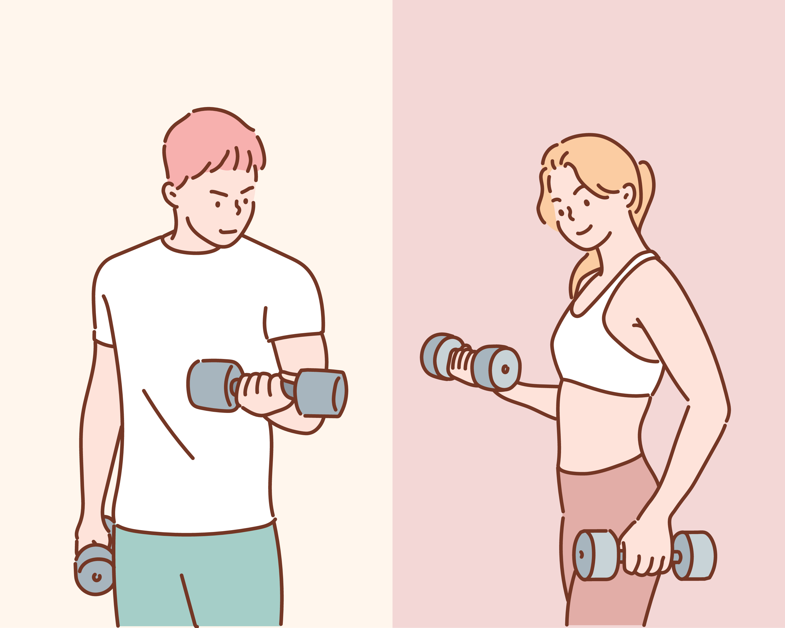

Warm-up session:
- 2 min jogging on the spot
- 30 seconds jumping jacks
- 10 push-ups
- 15 sit-ups
- 10 burpee's

Dum-Bell Exercise Method: Bicep-Curl
- Stand up straight with 2 reasonable weighted dum-bells in either hand at your side:
- Start by bending your right elbow and lifting the weight towards your right shoulder:
- Once the weight is as high as you can get it, hold it there for 1 second:
- Slowly release and lower the dumbell back to your side:
- Once you have returned to the starting position, now lift the opposite arm in the same manor:
- Remember you want to count 2 seconds on the lift, hold for 1 second and release for 3 seconds: